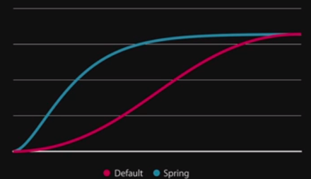
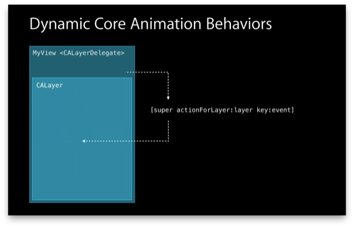

本场主要分4个议题：
- Spring animations
- Vibrancy and blur
- Shape layers
- Dynamic Core Animation behaviors
Spring animations
顾名思义指的是弹簧动画，很容易让人联想到UIKit Dynamic中的spring效果。但是，UIKit中就提供了API:
+ (void)animateWithDuration:(NSTimeInterval)duration delay:(NSTimeInterval)delay usingSpringWithDamping:(CGFloat)dampingRatio initialSpringVelocity:(CGFloat)velocity options:(UIViewAnimationOptions)options animations:(void (^)(void))animations completion:(void (^)(BOOL finished))completion
这是iOS7中就有的API，它和UIKit提供的普通animation API很类似，增加的两个参数：dampingRatio就是弹性系数，范围在0-1之间，通常取接近1的值；velocity就是动画的初始速度，这个参数可以用下图来理解：

横坐标是动画的事件，纵坐标是动画中变化的属性值。那么可以看到，普通的UIView animation的动画过程是比较平滑的；而spring的话，刚开始的“速率”就快多了。
Spring动画在iOS7中就已经是很多控件的标配，比如在屏幕上拉出设置页面，就带有spring效果。而且从这个API的设计接口来看，估计以后UIView 的普通animation API是会被spring所取代了。所以，在自定义控件的动画中，要注意使用spring动画，以符合iOS的风格
Vibrancy and blur
iOS7中有用于创建blur view的API：
-drawViewHierarchyInRect:afterScreenUpdates:,
通过该API可以将当前view的状态以UIImage绘制出来：
//https://developer.apple.com/library/ios/qa/qa1817/_index.html
- (UIImage *)snapshot:(UIView *)view
{
UIGraphicsBeginImageContextWithOptions(view.bounds.size, YES, 0);
[view drawViewHierarchyInRect:view.bounds afterScreenUpdates:YES];
UIImage *image = UIGraphicsGetImageFromCurrentImageContext();
UIGraphicsEndImageContext();
return image;
}
而去年的wwdc中有对UIImage进行blur的例子，两者结合就可以对UIView进行blur化。这种方式用官方语言描述就是：fast&&static. 而如今Apple提供了直接的API——UIVisualEffectView，使用方式很简单，就是先创建一个effect，然后再提供给view进行初始化,然后把它添加到要blur的view上。
UIVisualEffect *blurEffect = [UIBlurEffect effectWithStyle:UIBlurEffectStyleLight];
UIVisualEffectView *visualEffectView = [[UIVisualEffectView alloc] initWithEffect:blurEffect];
visualEffectView.frame = imageView.bounds
[imageView addSubview:visualEffectView];
可见，这里UIVisualEffectView变成了类似mask的东西。此外，该view提供blur和vibrancy两种效果。
Shape layers
这是个很古老的东西，它有一个path的属性，可以构建各种路径，从而方便定制UI。它的使用也很简单，和CALayer的用法类似。
Dynamic Core Animation behaviors
主要通过实现CAAction协议来实现动画。UIView animation的机制：

UIView会去查找是否实现CAAction协议，没有实现的话就会调用：
[super actionForLayer:layer key:event]。因此，如果实现了CAAction协议就可以定制动画。